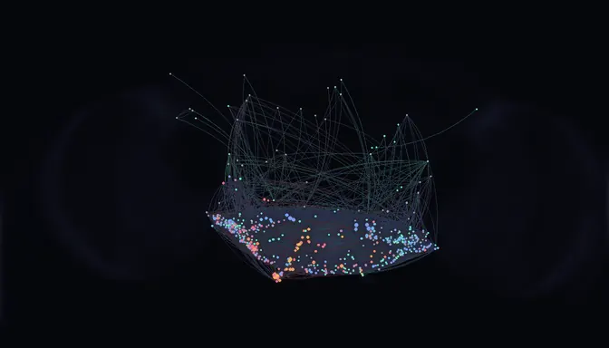
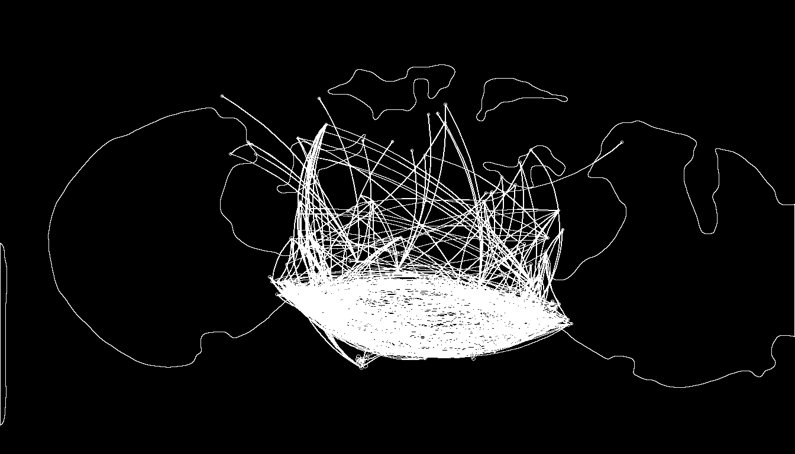
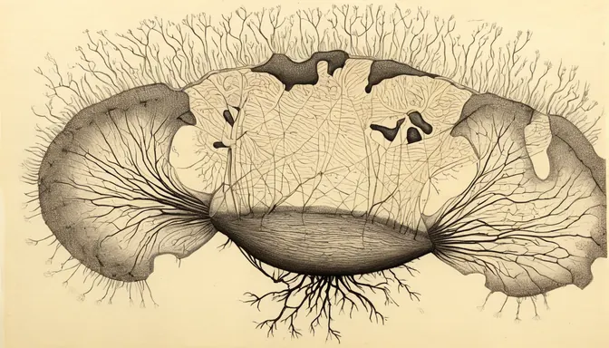
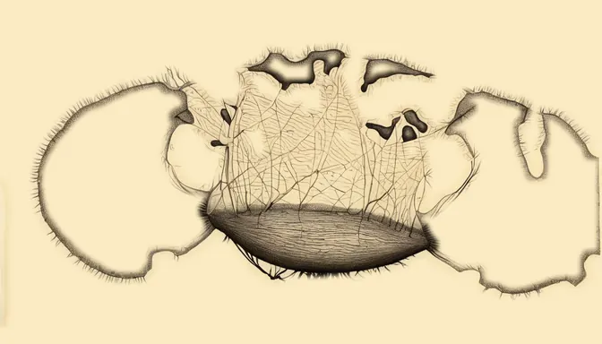
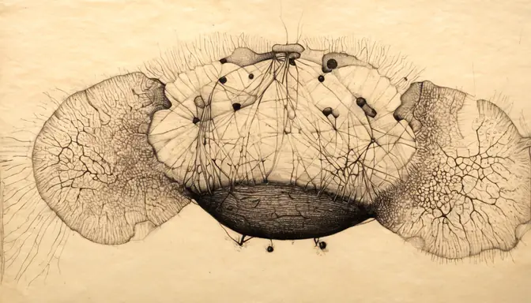
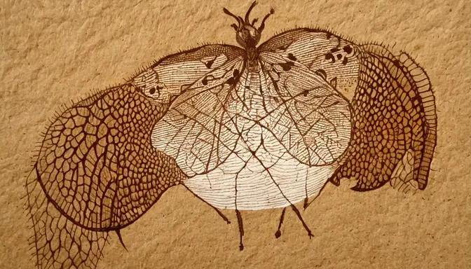
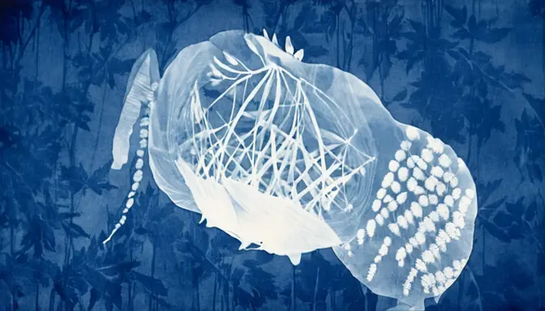
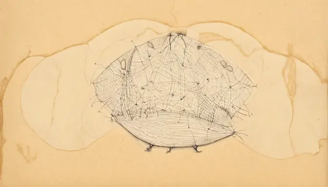
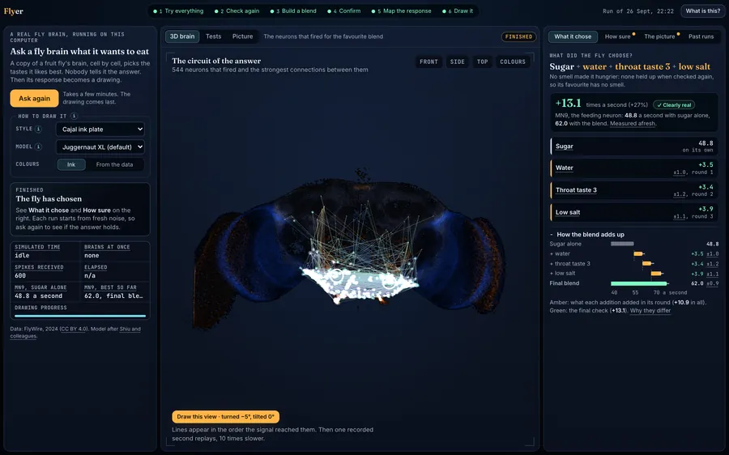
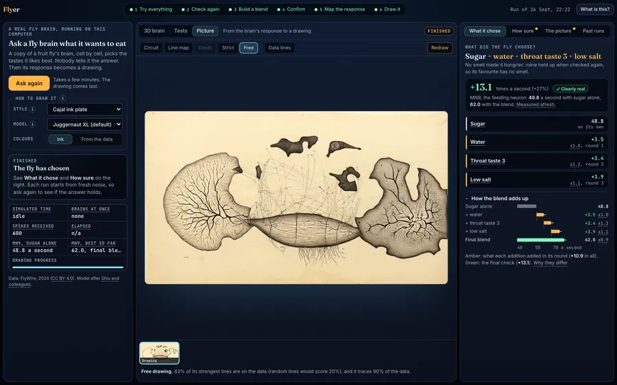

FlyWire connectome · spiking simulation
We asked a fly brain what it wants to eat.
Scientists mapped every neuron in a fruit fly's brain and shared the wiring with the world. Flyer switches that map on inside a computer, all 138,639 neurons of it, and lets it taste things. Sugar was always on the table. On top of it, the brain reached for water, a little salt and something from the throat. It never once picked a smell. Then we drew what its brain did.
How it works
How do you ask a brain what it likes?
You can't just ask a brain. So we gave it no menu and no recipes. We started with sugar, added every other taste and smell one at a time, and watched the neuron that drives feeding. Whatever the brain liked, it had to show in its wiring.
Try everything
All 63 channels (10 tastes, 53 smells) are added to sugar, one by one, for 16 simulated trials each.
Check again
Anything that looked even slightly promising is measured again, 64 trials each. Plenty of early hopefuls fade back into noise here.
Build a blend
The survivors are stacked on top of each other, best first, until the next addition stops helping.
Confirm
The finished blend races sugar alone in a fresh batch of 32 trials. In run 3, MN9 fired at 48.1 ± 0.9 Hz on sugar and 63.1 ± 0.8 Hz with the blend.
Water, salt and a throat taste.
Sugar was always on. On top of it, the brain picked water, a little salt and one throat taste. We ran the whole search six times, each from fresh random noise, and the answer never changed. No smell was ever picked, and most of them made the fly less keen to eat.
- Water+7.0
- Low salt+4.9
- Throat taste+4.2
- Citrus smell−7.4
- Vinegar smell−9.5
- Bitter−26.7
The 63 channels
10 tastes: water, low salt, bitter, the taste pegs inside the mouth, three pharyngeal (throat) groups, two accessory pharyngeal groups, and taste sensors from the legs and body.
53 smells: one for each group of smell receptor neurons in the antenna, from fruity esters and vinegar to citrus, carbon dioxide and pheromones. Each channel switches on just that group's sensory neurons.
Why no smell?
Four tastes raised feeding beyond noise. No smell did: 18 pushed it down and the other 35 changed nothing. MN9 measures the act of feeding, so this says which inputs make the brain eat, not which ones a fly likes the scent of. Smell may matter more for finding food, and this experiment doesn't measure that.
The brain is the FlyWire connectome (not ours, see the credit above): 138,639 neurons and about 15 million connections between them, simulated as a leaky integrate-and-fire network. In plain words, each neuron collects input, leaks a little, and fires once it has had enough. We ported Shiu et al.'s model (Nature, 2024) to PyTorch and changed one thing: in the original, a single smell neuron could set off thousands of others, so we corrected how the smell signals are signed. Taste behaves just as in the paper. The details are in the README.
The portrait
Then we drew what its brain did.
The neurons that fired, at their real places in the brain, and the connections between them, become a picture. Our code draws them two ways: a colourful data portrait and a bare line map. The line map goes to an image model (SDXL with a ControlNet), which is asked for an old scientific ink plate, never for food. These four pictures come from run 3.




Same brain, other moods
Change the style, the colours or the angle, and the same response looks like a different picture. Four plates from one saved run:




The app
Flyer runs on your own computer.
Watch the search unfold, spin the brain around in 3D, and dig into where every number came from. The drawing arrives last. It runs best on a GPU (NVIDIA or Apple silicon), and the drawings need ComfyUI with an SDXL model.


Run it
git clone https://github.com/thepixelabs/flyer && cd flyer
uv run python scripts/prepare.py # one-time: downloads the data (~135 MB)
uv run uvicorn app:app --port 8420 # then open http://localhost:8420The drawings need ComfyUI and two models from Hugging Face. The README walks you through it.
Or let your AI assistant do the setup
Set up the drawing models for Flyer by following the "Set up drawing" steps in the README at github.com/thepixelabs/flyer. Ask me before you download anything.Fair warning
It isn't what the fly sees.
We tried to find a picture that, seen through the fly's eyes, would set off the same feeding response. There isn't one. In the simulation, visual input fades out inside the optic lobes. In the wiring itself, vision barely touches the flavour circuit: about 50 times less than it touches random central neurons, and no better than chance. Flies find food with their noses and mouths, and the model agrees. So the drawing is a portrait of the brain's response, not an imagined meal.
What to keep in mind
- Sugar is always on, because nothing else gets this model to start feeding by itself. The other sugar sensors are left out, so "just add more sugar" can't win.
- MN9 is one readout of feeding, not the whole story.
- Every channel is driven at the same 30 Hz. Real tastes and smells vary in strength.
- The style, and the free drawing's flourishes, come from the image model. The strict version shows what's really data.
- Nobody knows yet which chemicals the throat taste groups respond to.
- It's a model: only as good as the wiring map and the simplifications behind it.
Credits
Standing on open science.
None of this exists without the FlyWire Consortium (Princeton University, Janelia Research Campus and the MRC Laboratory of Molecular Biology), who mapped this brain neuron by neuron (the FlyWire connectome, materialization 783, shared under CC BY 4.0), and without Shiu and colleagues, whose simulation model (MIT) we rebuilt. The pictures and screen results here are derived from that data, and we offer them under CC BY 4.0 too. Please credit FlyWire and cite the papers. No FlyWire root IDs are included, and no endorsement by the authors is implied. Our code is MIT.
Drawings are rendered locally with Juggernaut XL v9 (RunDiffusion and KandooAI) and ControlNet Union SDXL ProMax (xinsir). No model weights are distributed.
The papers behind it
If you reuse the data, the model or these results, please cite them.
- Dorkenwald, S. et al. Neuronal wiring diagram of an adult brain. Nature 634, 124–138 (2024). doi:10.1038/s41586-024-07558-y
- Schlegel, P. et al. Whole-brain annotation and multi-connectome cell typing of Drosophila. Nature 634, 139–152 (2024). doi:10.1038/s41586-024-07686-5
- Matsliah, A. et al. Neuronal parts list and wiring diagram for a visual system. Nature 634, 166–180 (2024). doi:10.1038/s41586-024-07981-1
- Berg, S. et al. Sexual dimorphism in the complete Drosophila male central nervous system connectome. Cell 189, 5504–5526.e15 (2026). doi:10.1016/j.cell.2026.08.015
- Shiu, P. K. et al. A Drosophila computational brain model reveals sensorimotor processing. Nature 634, 210–219 (2024). doi:10.1038/s41586-024-07763-9